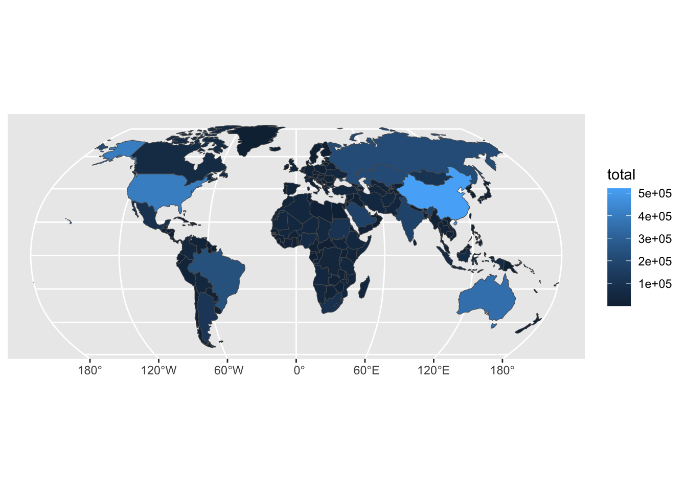
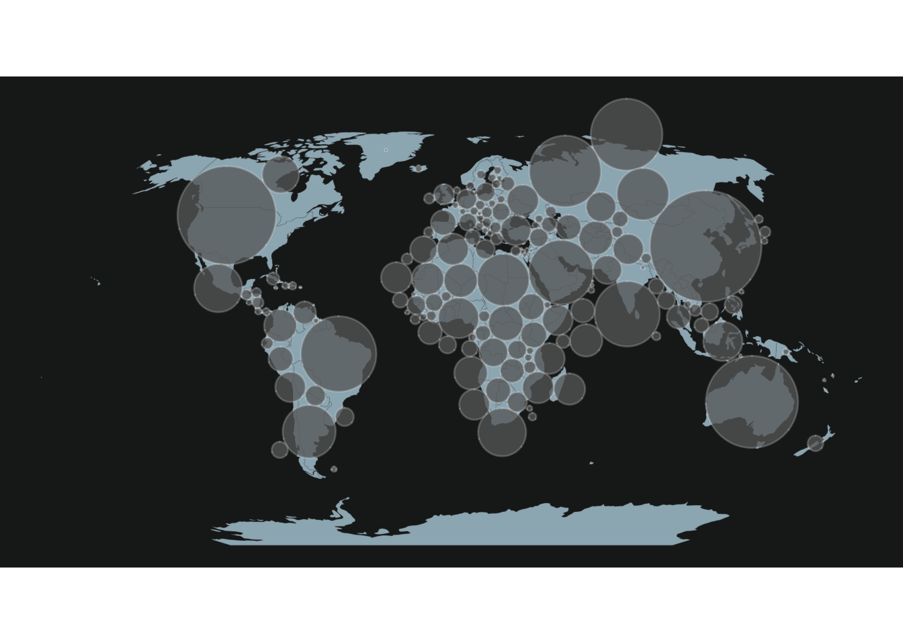
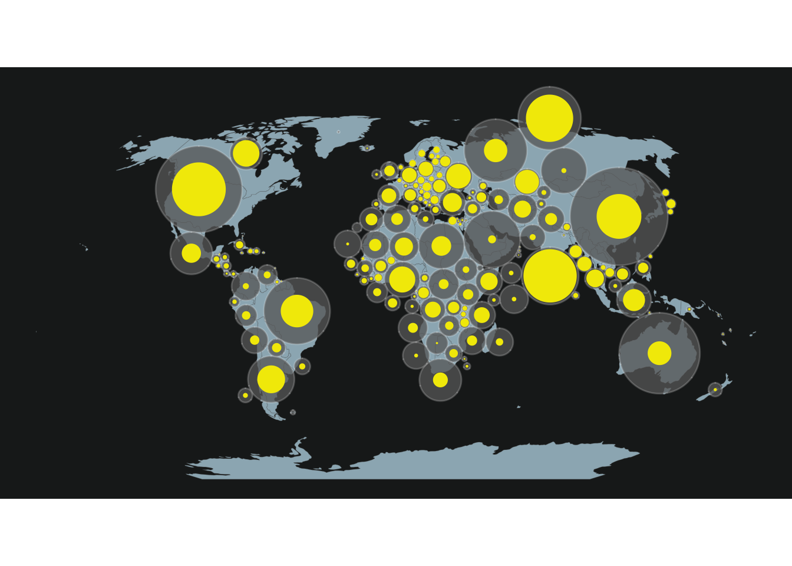
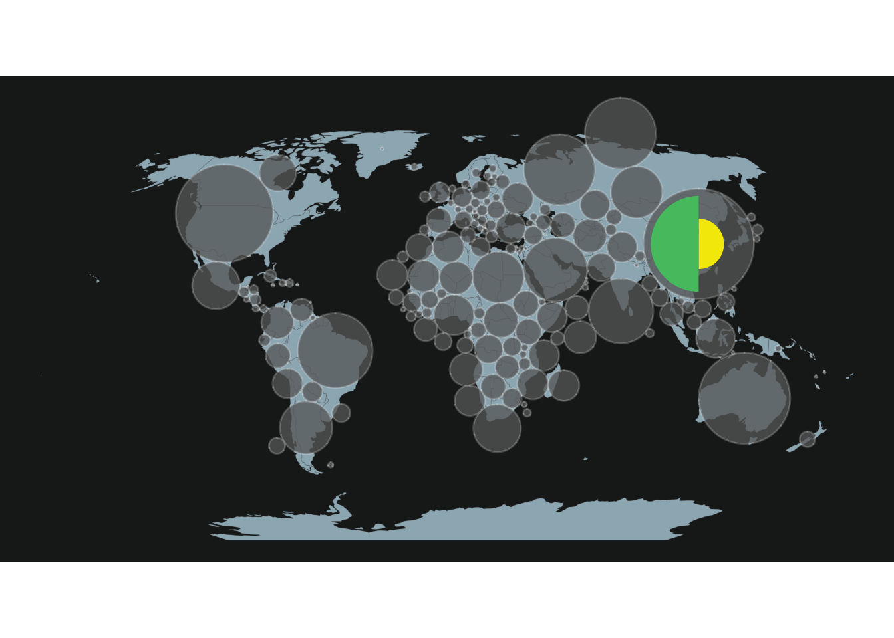
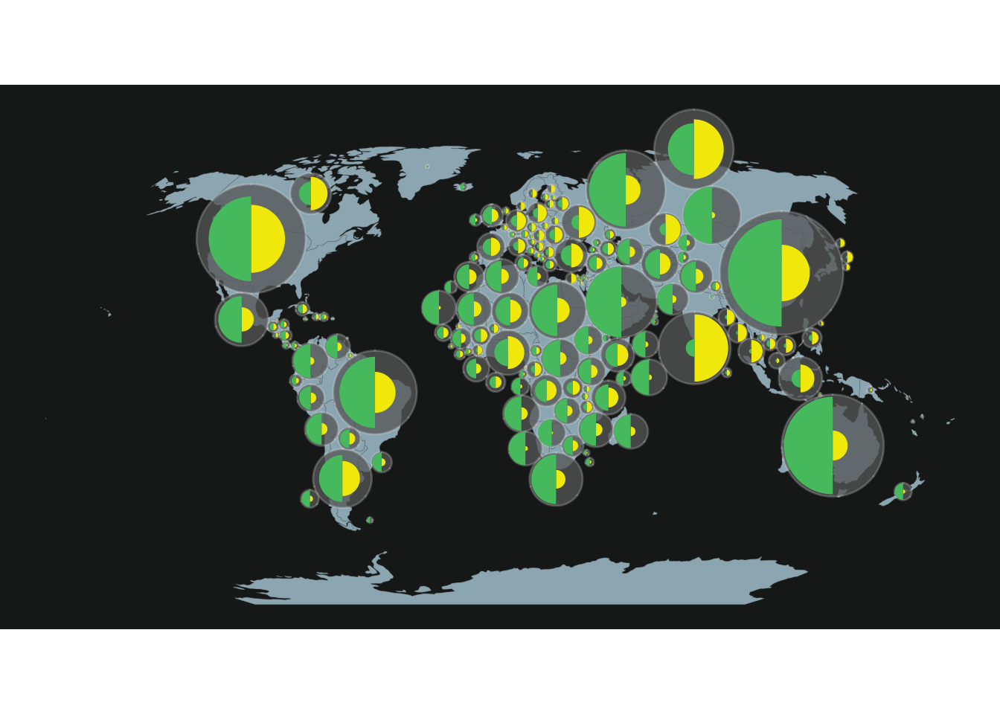

Related chart types

Map

Choropleth

Hexbin map

Cartogram

Connection

Bubble map
This blogpost
explains how to build a Dorling Cartogram with
R. A dorling cartogram is a variation of a cartogram, close
to a bubble
map.
The chart is implemented using the ggplot2,
cartogram, sf and a few other packages. This
article includes a step-by-step walkthrough of the map construction,
together with its final reproducible code.
A Dorling cartogram replaces polygons with circles proportional to a given variable, respecting the spatial position of the polygons as much as possible. So normally only one variable can be represented with a Dorling cartogram.
This tutorial will show how these cartograms can be adapted to represent the value of sub-variables. For this tutorial, the main variable that we will plot as a Dorling cartogram is the total agricultural land per country. The sub-variables we are going to add are arable land area (~crop land) and permanent grass area.
To create our customized Dorling cartogram, we will need these packages:
We will download the world basemap with {rnaturalearth}. Data about agricultural land use have been downloaded from FAOStat. Data may be downloaded at this link or loaded directy in R as shown below:
world <- ne_countries(scale = 110, type = "countries", returnclass = "sf")%>%
# Convert WGS84 to projected crs (here Robinson)
sf::st_transform(world_ne, crs="ESRI:54030")
data <- read_csv('https://raw.githubusercontent.com/BjnNowak/dorling_map/main/data/FAOSTAT_land_use_2020.csv')For data cleaning, we will create one column per variable of interest (total agricultural land, crop land and grass land), then join the data to the map.
clean <- data%>%
select(iso_a3='Area Code (ISO3)',item=Item,surface=Value)%>%
# Simplify variable names
mutate(item=case_when(
item=="Agricultural land"~"total",
item=="Arable land"~"crop",
item=="Permanent meadows and pastures"~"grass"
))%>%
# Pivot from long to wide
pivot_wider(names_from=item,values_from=surface)
# Join data to world map
map <- world%>%
left_join(clean)%>%
drop_na(total)Before going further, we will make a simple choropleth showing total agricultural land per country:

It is this map that will be converted as a Dorling cartogram.
It is really straightforward to make a Dorling cartogram with the {cartogram} library!
# Making Dorling cartogram based on total agricultural land
dorl<-cartogram::cartogram_dorling(
map, weight='total', k = 5,
m_weight = 1, itermax = 1000
)As the circles layout may be confusing, I like to use a “traditional” map as background when plotting a Dorling cartogram:
# Set colors
col_world <- "#9CB4BF"
col_back <- "#1D201F"
# Set theme
theme_custom <- theme_void()+
theme(plot.background = element_rect(fill=col_back,color=NA))
ggplot()+
# World basemap
geom_sf(
world,mapping=aes(geometry=geometry),
fill=col_world,color=alpha("dimgrey",0.25)
)+
# Dorling cartogram
geom_sf(
dorl,mapping=aes(geometry=geometry),
fill=alpha("dimgrey",0.75),color=alpha("white",0.2)
)+
theme_customUp to this point, we have a classic Dorling cartogram, with circles
proportional to total agricultural land, which is easy to plot with
geom_sf(). But, in order to add supplementary variables to
our map, we will extract some features from this map: the radius
and the coordinates of the centroids for each circus.
# Compute area and radius for each circus of the cartogram
dorl<-dorl%>%
mutate(
# Compute area
ar=as.numeric(st_area(dorl)),
# Compute radius based on area
rad=as.numeric(sqrt(ar/pi))
)
# Extract centroids for each circle
centr <- dorl%>%
st_centroid()%>%
st_coordinates()
# Combine data
dorl2 <- tibble(dorl,X=centr[,1],Y=centr[,2])%>%
arrange(-total)With these features, we may now make the same map as before, but
using the geom_circle() function from the {ggforce}
package.
ggplot()+
# World basemap
geom_sf(
world,mapping=aes(geometry=geometry),
fill=col_world,color=alpha("dimgrey",0.25)
)+
# Draw Dorling cartogram with geom_circle()
ggforce::geom_circle(
data = dorl2, aes(x0 = X, y0 = Y, r = rad),
fill=alpha("dimgrey",0.75),color=alpha("white",0.2)
)+
theme_custom
The interest of calculating such features is that we can now use this workflow to compute the related radius for the surface under crop or grass (centroids will be the same).
dorl2 <- dorl2 %>%
mutate(
ratio_crop = crop/total,
ratio_grass = grass/total
)%>%
mutate(
rad_crop=sqrt(rad*rad*ratio_crop),
rad_grass=sqrt(rad*rad*ratio_grass)
)This way we can add the crop (or grass) area for each country to the map:
col_crop <- "#f2e901"
col_grass <- "#51c26f"
ggplot()+
# World basemap
geom_sf(
world,mapping=aes(geometry=geometry),
fill=col_world,color=alpha("dimgrey",0.25)
)+
# Draw Dorling cartogram with geom_circle()
ggforce::geom_circle(
data = dorl2, aes(x0 = X, y0 = Y, r = rad),
fill=alpha("dimgrey",0.75),color=alpha("white",0.2)
)+
# Draw circle for crops (or grass)
ggforce::geom_circle(
data = dorl2, aes(x0 = X, y0 = Y, r = rad_crop),
fill=col_crop,color=NA
)+
theme_custom
But with this method it is not possible to plot at the same time the total area, the crop area and the grass area. To overcome this limit, we will plot two half circles (one for crop, one for grass) on the map.
The function below, adapted from this post on StackOverflow allows to draw circle portions:
circleFun <- function(
center=c(0,0), # center of the circle
diameter=1, # diameter
npoints=100, # number of points to draw the circle
start=0, end=2 # start point/end point
){
tt <- seq(start*pi, end*pi, length.out=npoints)
tb <- tibble(
x = center[1] + diameter / 2 * cos(tt),
y = center[2] + diameter / 2 * sin(tt)
)
return(tb)
}As an example, we will use this function to draw two half circles (one for crop, one for grass) for the first country of the map, China:
# Half circle for crops
half_crop <- bind_cols(
iso_a3 = rep(dorl2$iso_a3[1],100),
circleFun(
c(dorl2$X[1],dorl2$Y[1]),dorl2$rad_crop[1]*2, start=1.5, end=2.5
))
# Half circle for grass
half_grass <- bind_cols(
iso_a3 = rep(dorl2$iso_a3[1],100),
circleFun(
c(dorl2$X[1],dorl2$Y[1]),dorl2$rad_grass[1]*2, start=0.5, end=1.5
))These half-circles will be added to the map using the
geom_polygon() function, which allows to join points.
ggplot()+
# World basemap
geom_sf(
world,mapping=aes(geometry=geometry),
fill=col_world,color=alpha("dimgrey",0.25)
)+
# Draw Dorling cartogram with geom_circle()
ggforce::geom_circle(
data = dorl2, aes(x0 = X, y0 = Y, r = rad),
fill=alpha("dimgrey",0.75),color=alpha("white",0.2)
)+
# Draw half circle for crop with geom_polygon
geom_polygon(
half_crop,
mapping=aes(x,y,group=iso_a3),
fill=col_crop,color=NA
)+
# Draw half circle for grass with geom_polygon
geom_polygon(
half_grass,
mapping=aes(x,y,group=iso_a3),
fill=col_grass,color=NA
)+
theme_custom
Now that we detailed the workflow for one country, we just have to extend it to the rest of the world, using a for loop.
# Make loop for all countries
for (i in 2:dim(dorl2)[1]){
# Draw for crops
temp_crop <- bind_cols(
iso_a3 = rep(dorl2$iso_a3[i],100),
circleFun(
c(dorl2$X[i],dorl2$Y[i]),dorl2$rad_crop[i]*2, start=1.5, end=2.5
))
# Draw for grass
temp_grass <- bind_cols(
iso_a3 = rep(dorl2$iso_a3[i],100),
circleFun(
c(dorl2$X[i],dorl2$Y[i]),dorl2$rad_grass[i]*2, start=0.5, end=1.5
))
half_crop<-half_crop%>%
bind_rows(temp_crop)
half_grass<-half_grass%>%
bind_rows(temp_grass)
}
# Make map
ggplot()+
# World basemap
geom_sf(
world,mapping=aes(geometry=geometry),
fill=col_world,color=alpha("dimgrey",0.25)
)+
# Draw Dorling cartogram with geom_circle()
ggforce::geom_circle(
data = dorl2, aes(x0 = X, y0 = Y, r = rad),
fill=alpha("dimgrey",0.75),color=alpha("white",0.2)
)+
# Draw half circle for crop with geom_polygon
geom_polygon(
half_crop,
mapping=aes(x,y,group=iso_a3),
fill=col_crop,color=NA
)+
# Draw half circle for grass with geom_polygon
geom_polygon(
half_grass,
mapping=aes(x,y,group=iso_a3),
fill=col_grass,color=NA
)+
theme_custom
Now feel free to adapt this tutorial to your project! For example, it
is also possible to represent more than two sub-variables per circle, by
modifying the start and end arguments of the circleFun()
function.
Author Benjamin Nowak
Data FAOStat
Related chart types